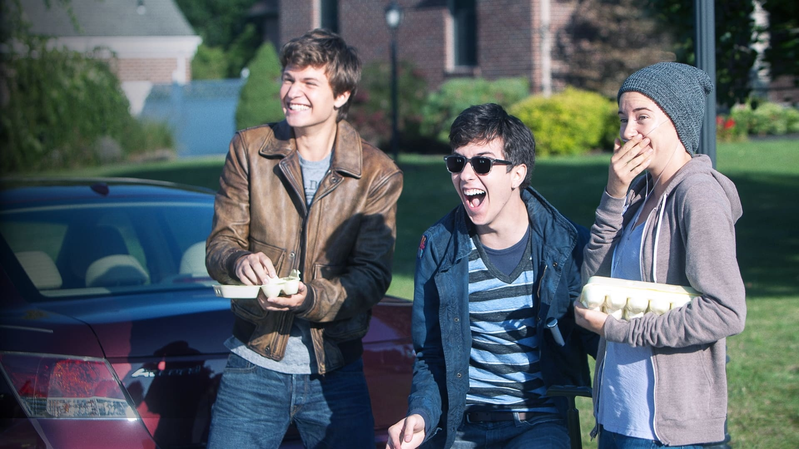
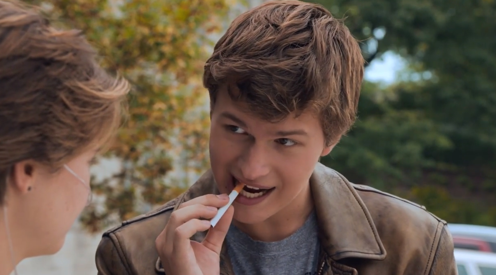
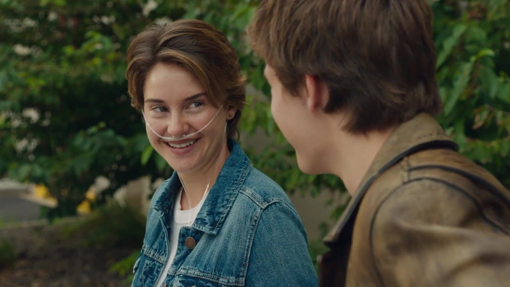
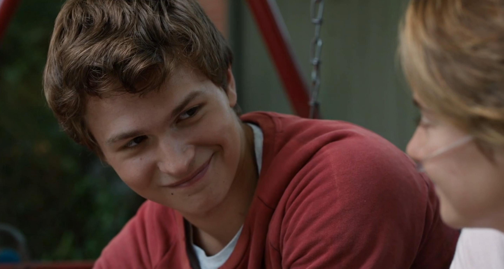
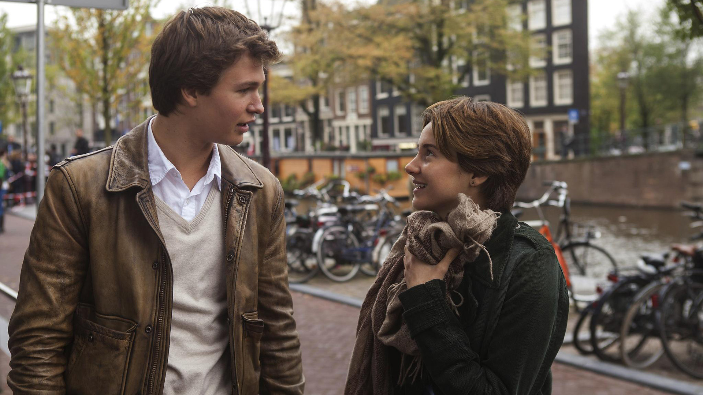
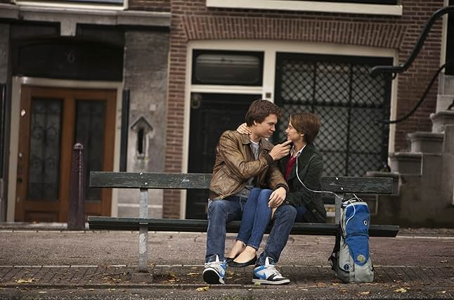

She was sixteen, lungs full of flowers and poison.
Hazel Grace Lancaster lived in the space between moments—half alive, half resigned. Thyroid cancer had stolen her breath, her strength, her childhood, and replaced them with oxygen tanks and appointments. She didn’t believe in miracles. Or hope. Or the idea that the universe owed anyone a happy ending. She didn’t even want to attend Support Group, but her mother insisted.
“Make friends,” she said. “Live a little.”

Hazel wasn’t interested in friendship. But fate has a strange way of interrupting silence with a laugh.
At one particular session, with folding chairs and tired faces, he walked in.
Augustus Waters.

He wasn’t like the others. Where they dragged their pain behind them, Augustus seemed to flirt with it. Leaning back in his chair, one leg where the other should be, eyes dancing with mischief, he noticed Hazel the way no one had in a long time.
And she noticed him.
He asked her what her name was. She said it. He repeated it like it was poetry.
They talked after group. He held a cigarette between his lips—not lit, just there. A metaphor, he called it. “You put the killing thing between your teeth, but you don’t give it the power to do its killing.”
Hazel laughed—really laughed. And something shifted.

They started spending days together. They shared books and quotes and thoughts about oblivion. Hazel lent him her favorite novel, An Imperial Affliction, a story that mirrored her own life so precisely, it felt like breathing through someone else’s truth.
He read it in a single night.
And he wanted answers.
The book ended mid-sentence, just like life sometimes does. The author, Peter Van Houten, had disappeared into Amsterdam. Augustus wanted to find him. “Let’s go,” he said, like it was a picnic.
Hazel didn’t let herself dream. She’d always been careful not to be a grenade—something that would explode and hurt everyone around her. She didn’t want to be loved, only to be lost. But Augustus Waters didn’t believe in tiptoeing around fate.

“I fell in love with you,” he said one day, “the way you fall asleep. Slowly, and then all at once.”
And Hazel’s heart, weary and fragile, answered his.
Make-a-Wish granted her a trip. Amsterdam. Tulips. Canal boats. Narrow buildings pressed together like secrets. She wore a blue dress, and he wore a smile that could stop clocks. They kissed beneath the stars and held hands like anchors.
And then the truth.
Augustus had kept something from her. The cancer had come back. Fiercer. Terminal.
Hazel’s breath left her.
She had thought herself the grenade, but he was the one ticking.
They spent what time they had together not in hospitals, but in parks, in poems, in quiet rooms with loud hearts. He wrote her eulogies before death took him. He didn’t want to be forgotten. Hazel promised he wouldn’t.
He passed away before the leaves could turn.
She stood at his funeral, feeling both full and hollow. There are some infinities greater than others, Van Houten had once said. Some infinities are just big enough to change everything.

Hazel had been given a little infinity with Augustus Waters.
And it was enough.
She read his final words in a letter to Van Houten: “You gave me a forever within the numbered days, and I’m grateful.”
And as she lay under the stars they had once named, she whispered back:

“I do, Augustus. I do.”